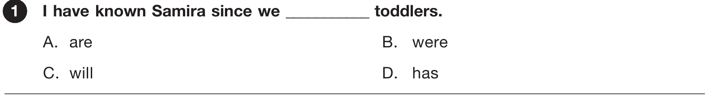
For questions 1 to 7, choose the correct option to fill in the blank.
I have known Samira since we ___________ toddlers.
are
were
will
has
The suitable verb form ‘were’ is to be used as the sentence talks about an event of past and the noun is in plural (toddlers).
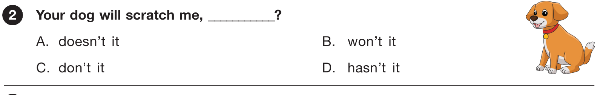
For questions 1 to 7, choose the correct option to fill in the blank.
Your dog will scratch me, ___________?
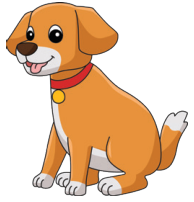
doesn’t it
won’t it
don’t it
hasn’t it
The suitable question tag ‘won’t it’ is to be used, as the contraction of ‘will not’ is ‘won’t’.
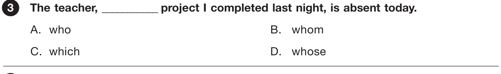
For questions 1 to 7, choose the correct option to fill in the blank.
The teacher, ___________ project I completed last night, is absent today.
who
whom
which
whose
The suitable adjective ‘whose’ is to be used, as it describes to whom something belongs.
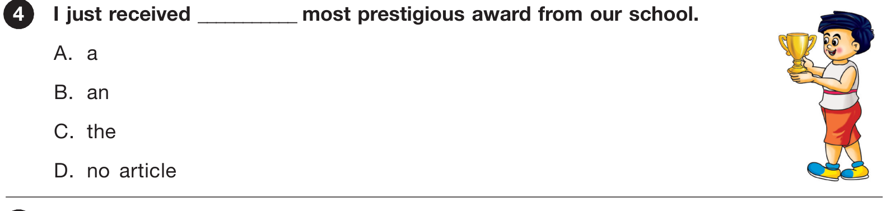
For questions 1 to 7, choose the correct option to fill in the blank.
I just received ___________ most prestigious award from our school.
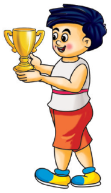
a
an
the
no article
The suitable definite article ‘the’ is to be used with the superlative degree of the adjective ‘most prestigious award’ in the sentence.
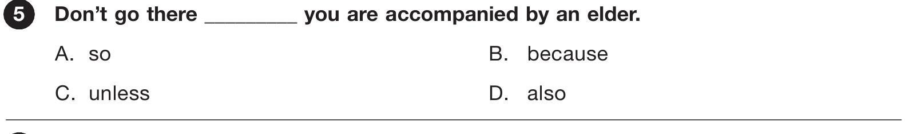
For questions 1 to 7, choose the correct option to fill in the blank.
Don’t go there _________ you are accompanied by an elder.
so
because
unless
also
The suitable subordinating conjunction ‘unless’ is to be used, as it shows the condition that a particular situation will not happen if a condition is not met.
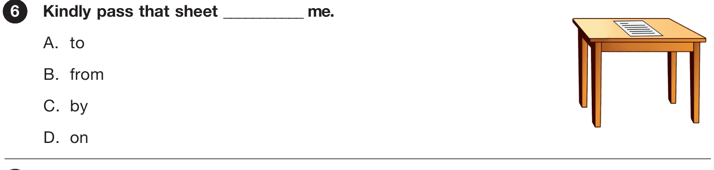
For questions 1 to 7, choose the correct option to fill in the blank.
Kindly pass that sheet ___________ me.
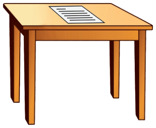
to
from
by
on
The appropriate preposition ‘to’ is to be used, as it indicates the direction of the action.
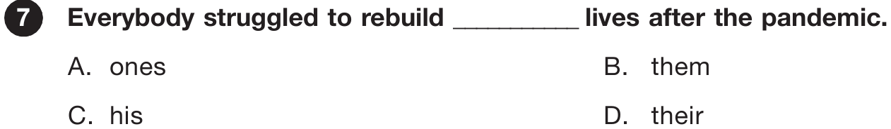
For questions 1 to 7, choose the correct option to fill in the blank.
Everybody struggled to rebuild ___________ lives after the pandemic.
ones
them
his
their
The suitable possessive adjective ‘their’ is to be used, as it provides reference to the indefinite pronoun ‘everybody’ in the sentence.
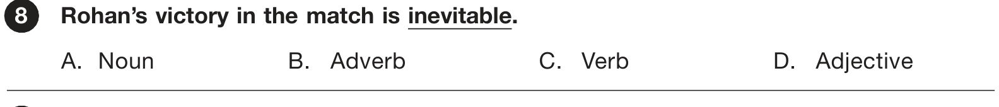
For questions 8 and 9, choose the correct option for the underlined word.
Rohan’s victory in the match is inevitable.
Noun
Adverb
Verb
Adjective
The underlined word ‘inevitable’ is an adjective because it describes the quality of Rohan’s victory in the sentence.
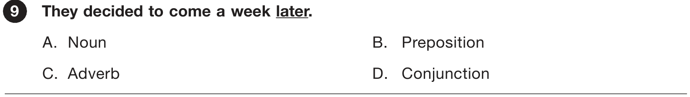
For questions 8 and 9, choose the correct option for the underlined word.
Noun
Preposition
Adverb
Conjunction
The underlined word ‘later’ is an adverb because it describes the time in the sentence.
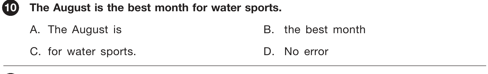
For questions 10 and 11, choose the part of the sentence that has an error.
The August is the best month for water sports.
The August is
the best month
for water sports.
No error
The error is in the option B as article ‘the’ is not to be used before the name of a month. Hence, the correct sentence is: ‘August is the best month for water sports.’
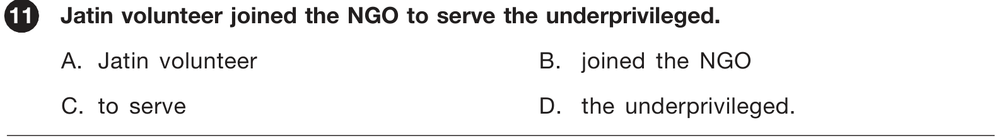
For questions 10 and 11, choose the part of the sentence that has an error.
Jatin volunteer joined the NGO to serve the underprivileged.
Jatin volunteer
joined the NGO
to serve
the underprivileged.
The error is in the option A as the adjective ‘volunteer’ should be replaced with the adverb ‘voluntarily’. The correct sentence is: ‘Jatin voluntarily joined the NGO to serve the underprivileged.’
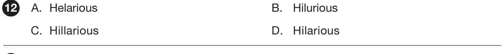
For questions 12 and 13, choose the option with correct spelling.
Helarious
Hilurious
Hillarious
Hilarious
The correct spelling is ‘hilarious’, which means ‘extremely funny’.
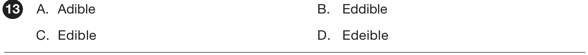
For questions 12 and 13, choose the option with correct spelling.
Adible
Eddible
Edible
Edeible
The correct spelling is ‘edible’, which means ‘fit to be eaten’.
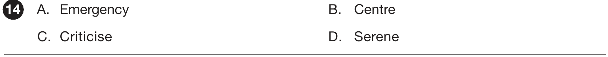
Choose the correct synonym of crisis.
Emergency
Centre
Criticise
Serene
The synonym of the word ‘crisis’ is ‘emergency’, as they both mean ‘a serious event that needs immediate action’.
Choose the correct antonym of whine.
Lament
Protest
Cry
Praise
The antonym of the word ‘whine’ is ‘praise’. The word ‘whine’ means ‘to complain’, whereas the word ‘praise’ means ‘to glorify’.
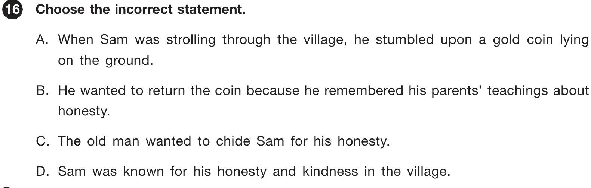
For questions 16 to 20, read the passage and answer the questions that follow.
Once upon a time, in a quaint village nestled between lush green hills, there lived a young boy named Sam. Sam was known for his kindness and honesty. He lived with his parents in a small cottage at the edge of the village.
One sunny morning, as Sam was strolling through the village, he stumbled upon a shiny gold coin lying on the ground. His eyes sparkled with excitement, and for a moment, he thought about keeping it for himself. But then he remembered his parents’ teachings about honesty. Sam picked up the coin and decided to inquire around the village if anyone had lost it. He went from door to door, asking every villager if they had misplaced a gold coin. However, no one claimed it. Just as he was about to return home, he saw a distressed old man searching something frantically near the village square. Sam approached him and asked, “Are you looking for something, sir?”
The old man’s eyes lit up with hope as he replied, “Yes, my dear boy! I lost a shiny gold coin that I was saving for my granddaughter’s birthday gift. It’s very precious to me.” Upon hearing this, Sam smiled and handed the coin to the old man. The man was overjoyed and insisted on rewarding Sam for his honesty. But Sam politely refused, saying, “Helping someone in need is its own reward, sir.” The news of Sam’s honesty spread throughout the village like wildfire. The villagers praised him for his integrity and kindness. Sam’s parents were immensely proud of him. As time passed, Sam’s act of honesty inspired others in the village to be truthful and compassionate. The village became known far and wide as a place where honesty and kindness prevailed. From that day on, whenever someone faced a dilemma, they would ask themselves, “What would Sam do?” And the answer was always clear : to choose honesty and kindness above all else. And so, the story of Sam taught everyone that, even in the face of temptation, honesty is the brightest treasure one can possess.
Choose the incorrect statement.
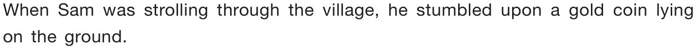
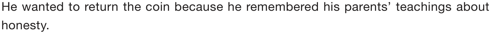
The old man wanted to chide Sam for his honesty.
Sam was known for his honesty and kindness in the village.
The incorrect statement is ‘the old man wanted to chide Sam for his honesty’ because, according to the passage, the man was overjoyed and insisted on rewarding Sam for his honesty.
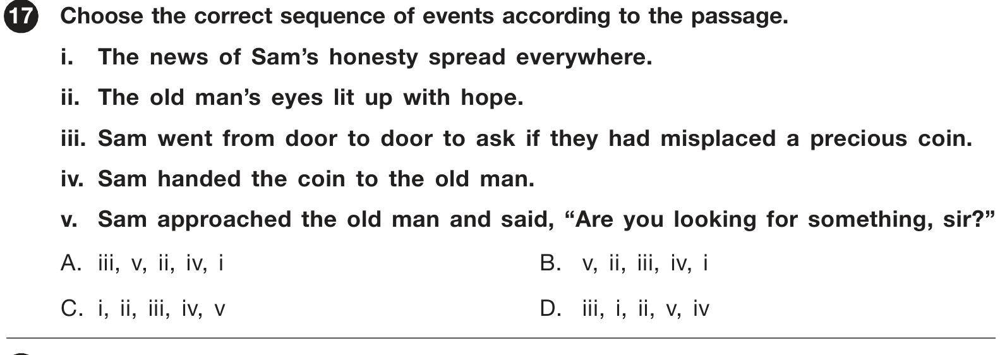
For questions 16 to 20, read the passage and answer the questions that follow.
Once upon a time, in a quaint village nestled between lush green hills, there lived a young boy named Sam. Sam was known for his kindness and honesty. He lived with his parents in a small cottage at the edge of the village.
One sunny morning, as Sam was strolling through the village, he stumbled upon a shiny gold coin lying on the ground. His eyes sparkled with excitement, and for a moment, he thought about keeping it for himself. But then he remembered his parents’ teachings about honesty. Sam picked up the coin and decided to inquire around the village if anyone had lost it. He went from door to door, asking every villager if they had misplaced a gold coin. However, no one claimed it. Just as he was about to return home, he saw a distressed old man searching something frantically near the village square. Sam approached him and asked, “Are you looking for something, sir?”
The old man’s eyes lit up with hope as he replied, “Yes, my dear boy! I lost a shiny gold coin that I was saving for my granddaughter’s birthday gift. It’s very precious to me.” Upon hearing this, Sam smiled and handed the coin to the old man. The man was overjoyed and insisted on rewarding Sam for his honesty. But Sam politely refused, saying, “Helping someone in need is its own reward, sir.” The news of Sam’s honesty spread throughout the village like wildfire. The villagers praised him for his integrity and kindness. Sam’s parents were immensely proud of him. As time passed, Sam’s act of honesty inspired others in the village to be truthful and compassionate. The village became known far and wide as a place where honesty and kindness prevailed. From that day on, whenever someone faced a dilemma, they would ask themselves, “What would Sam do?” And the answer was always clear : to choose honesty and kindness above all else. And so, the story of Sam taught everyone that, even in the face of temptation, honesty is the brightest treasure one can possess.
Choose the correct sequence of events according to the passage.
i. The news of Sam’s honesty spread everywhere.
ii. The old man’s eyes lit up with hope.
iii. Sam went from door to door to ask if they had misplaced a precious coin. iv. Sam handed the coin to the old man.
v. Sam approached the old man and said, “Are you looking for something, sir?”
iii, v, ii, iv, i
v, ii, iii, iv, i
i, ii, iii, iv, v
iii, i, ii, v, iv
The most appropriate option is A as it is the correct sequence of events according to the passage.
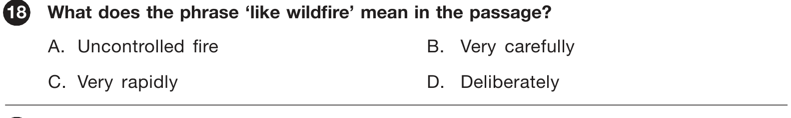
For questions 16 to 20, read the passage and answer the questions that follow.
Once upon a time, in a quaint village nestled between lush green hills, there lived a young boy named Sam. Sam was known for his kindness and honesty. He lived with his parents in a small cottage at the edge of the village.
One sunny morning, as Sam was strolling through the village, he stumbled upon a shiny gold coin lying on the ground. His eyes sparkled with excitement, and for a moment, he thought about keeping it for himself. But then he remembered his parents’ teachings about honesty. Sam picked up the coin and decided to inquire around the village if anyone had lost it. He went from door to door, asking every villager if they had misplaced a gold coin. However, no one claimed it. Just as he was about to return home, he saw a distressed old man searching something frantically near the village square. Sam approached him and asked, “Are you looking for something, sir?”
The old man’s eyes lit up with hope as he replied, “Yes, my dear boy! I lost a shiny gold coin that I was saving for my granddaughter’s birthday gift. It’s very precious to me.” Upon hearing this, Sam smiled and handed the coin to the old man. The man was overjoyed and insisted on rewarding Sam for his honesty. But Sam politely refused, saying, “Helping someone in need is its own reward, sir.” The news of Sam’s honesty spread throughout the village like wildfire. The villagers praised him for his integrity and kindness. Sam’s parents were immensely proud of him. As time passed, Sam’s act of honesty inspired others in the village to be truthful and compassionate. The village became known far and wide as a place where honesty and kindness prevailed. From that day on, whenever someone faced a dilemma, they would ask themselves, “What would Sam do?” And the answer was always clear : to choose honesty and kindness above all else. And so, the story of Sam taught everyone that, even in the face of temptation, honesty is the brightest treasure one can possess.
What does the phrase ‘like wildfire’ mean in the passage?
Uncontrolled fire
Very carefully
Very rapidly
Deliberately
The appropriate option ‘very rapidly’ is correct because the phrase ‘like wildfire’ means ‘very quickly’.
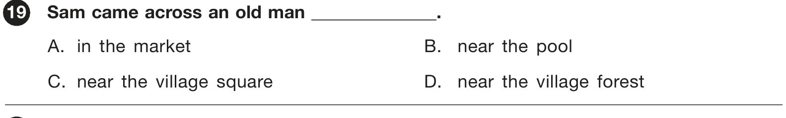
For questions 16 to 20, read the passage and answer the questions that follow.
Once upon a time, in a quaint village nestled between lush green hills, there lived a young boy named Sam. Sam was known for his kindness and honesty. He lived with his parents in a small cottage at the edge of the village.
One sunny morning, as Sam was strolling through the village, he stumbled upon a shiny gold coin lying on the ground. His eyes sparkled with excitement, and for a moment, he thought about keeping it for himself. But then he remembered his parents’ teachings about honesty. Sam picked up the coin and decided to inquire around the village if anyone had lost it. He went from door to door, asking every villager if they had misplaced a gold coin. However, no one claimed it. Just as he was about to return home, he saw a distressed old man searching something frantically near the village square. Sam approached him and asked, “Are you looking for something, sir?”
The old man’s eyes lit up with hope as he replied, “Yes, my dear boy! I lost a shiny gold coin that I was saving for my granddaughter’s birthday gift. It’s very precious to me.” Upon hearing this, Sam smiled and handed the coin to the old man. The man was overjoyed and insisted on rewarding Sam for his honesty. But Sam politely refused, saying, “Helping someone in need is its own reward, sir.” The news of Sam’s honesty spread throughout the village like wildfire. The villagers praised him for his integrity and kindness. Sam’s parents were immensely proud of him. As time passed, Sam’s act of honesty inspired others in the village to be truthful and compassionate. The village became known far and wide as a place where honesty and kindness prevailed. From that day on, whenever someone faced a dilemma, they would ask themselves, “What would Sam do?” And the answer was always clear : to choose honesty and kindness above all else. And so, the story of Sam taught everyone that, even in the face of temptation, honesty is the brightest treasure one can possess.
Sam came across an old man ______________.
in the market
near the pool
near the village square
near the village forest
The option ‘near the village square’ is appropriate because when Sam was about to return home, he saw a distressed old man searching for something frantically near the village square.
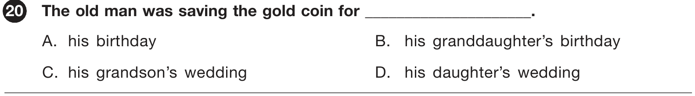
For questions 16 to 20, read the passage and answer the questions that follow.
Once upon a time, in a quaint village nestled between lush green hills, there lived a young boy named Sam. Sam was known for his kindness and honesty. He lived with his parents in a small cottage at the edge of the village.
One sunny morning, as Sam was strolling through the village, he stumbled upon a shiny gold coin lying on the ground. His eyes sparkled with excitement, and for a moment, he thought about keeping it for himself. But then he remembered his parents’ teachings about honesty. Sam picked up the coin and decided to inquire around the village if anyone had lost it. He went from door to door, asking every villager if they had misplaced a gold coin. However, no one claimed it. Just as he was about to return home, he saw a distressed old man searching something frantically near the village square. Sam approached him and asked, “Are you looking for something, sir?”
The old man’s eyes lit up with hope as he replied, “Yes, my dear boy! I lost a shiny gold coin that I was saving for my granddaughter’s birthday gift. It’s very precious to me.” Upon hearing this, Sam smiled and handed the coin to the old man. The man was overjoyed and insisted on rewarding Sam for his honesty. But Sam politely refused, saying, “Helping someone in need is its own reward, sir.” The news of Sam’s honesty spread throughout the village like wildfire. The villagers praised him for his integrity and kindness. Sam’s parents were immensely proud of him. As time passed, Sam’s act of honesty inspired others in the village to be truthful and compassionate. The village became known far and wide as a place where honesty and kindness prevailed. From that day on, whenever someone faced a dilemma, they would ask themselves, “What would Sam do?” And the answer was always clear : to choose honesty and kindness above all else. And so, the story of Sam taught everyone that, even in the face of temptation, honesty is the brightest treasure one can possess.
The old man was saving the gold coin for _____________________.
his birthday
his granddaughter’s birthday
his grandson’s wedding
his daughter’s wedding
The most suitable option is ‘his granddaughter’s birthday’.
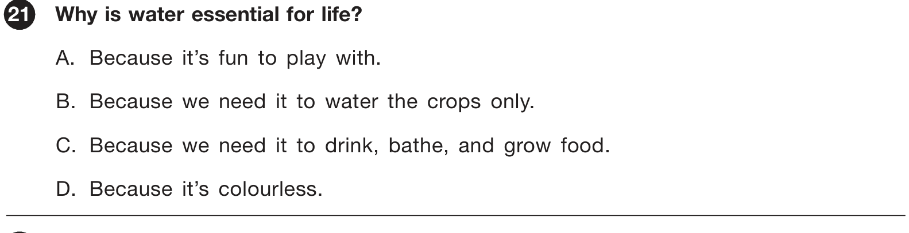
For questions 21 to 25, read the passage and answer the questions that follow.
The environment is our home, the place where we live, breathe, and grow. It includes everything around us, from the air we breathe to the water we drink to the trees, animals, and earth beneath our feet. It’s like a big, beautiful puzzle where every piece is essential for life to thrive. Imagine a world without trees, without birds chirping, or without flowers blooming. It would be a dull and lifeless place. That’s why it’s crucial to take care of our environment, just like we take care of our homes.
One of the most important things we can do to protect the environment is to reduce, reuse, and recycle. This means using less plastic, paper, and other materials that harm the environment. Instead of throwing things away, we can find creative ways to reuse them or recycle them into something new.
Another way to help the environment is by planting trees. Trees are like the lungs of the earth; they absorb carbon dioxide and release oxygen, which we need to
breathe. They also provide shade, habitat for animals, and help prevent soil erosion. We should also be mindful of how we use resources like water and electricity. Turning off the lights when we leave a room, taking shorter showers, and fixing leaky faucets can all help conserve water and energy.
It’s essential to protect the habitats of animals and plants by not littering or polluting our rivers, oceans, and forests. Every little action we take, whether it’s picking up trash or planting a sapling, can make a difference in preserving our environment for future generations.
Water is essential for life. We use it to drink, bathe, and grow food. But when we pollute our rivers, lakes, and oceans, it harms the creatures living in them and makes the water unsafe for us too. We can all do our part to protect our environment. By taking care of our environment, we are taking care of ourselves and our planet. Let’s work together to keep our home clean, green, and beautiful for many years to come.
Why is water essential for life?
Because it’s fun to play with.
Because we need it to water the crops only.
Because we need it to drink, bathe, and grow food.
Because it’s colourless.
The most appropriate option is ‘because we need it to drink, bathe, and grow food’.
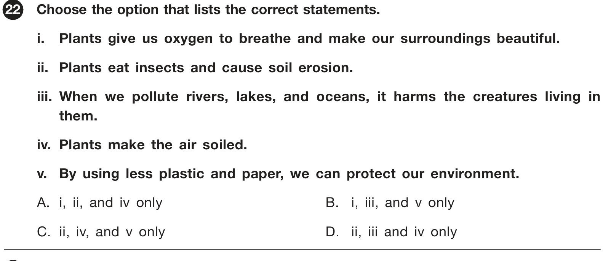
For questions 21 to 25, read the passage and answer the questions that follow.
The environment is our home, the place where we live, breathe, and grow. It includes everything around us, from the air we breathe to the water we drink to the trees, animals, and earth beneath our feet. It’s like a big, beautiful puzzle where every piece is essential for life to thrive. Imagine a world without trees, without birds chirping, or without flowers blooming. It would be a dull and lifeless place. That’s why it’s crucial to take care of our environment, just like we take care of our homes.
One of the most important things we can do to protect the environment is to reduce, reuse, and recycle. This means using less plastic, paper, and other materials that harm the environment. Instead of throwing things away, we can find creative ways to reuse them or recycle them into something new.
Another way to help the environment is by planting trees. Trees are like the lungs of the earth; they absorb carbon dioxide and release oxygen, which we need to
breathe. They also provide shade, habitat for animals, and help prevent soil erosion. We should also be mindful of how we use resources like water and electricity. Turning off the lights when we leave a room, taking shorter showers, and fixing leaky faucets can all help conserve water and energy.
It’s essential to protect the habitats of animals and plants by not littering or polluting our rivers, oceans, and forests. Every little action we take, whether it’s picking up trash or planting a sapling, can make a difference in preserving our environment for future generations.
Water is essential for life. We use it to drink, bathe, and grow food. But when we pollute our rivers, lakes, and oceans, it harms the creatures living in them and makes the water unsafe for us too. We can all do our part to protect our environment. By taking care of our environment, we are taking care of ourselves and our planet. Let’s work together to keep our home clean, green, and beautiful for many years to come.
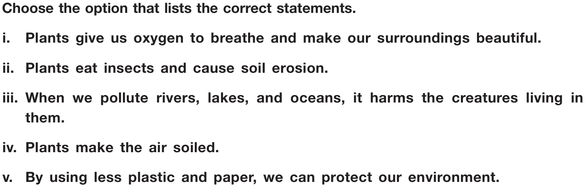
i, ii, and iv only
i, iii, and v only
ii, iv, and v only
ii, iii and iv only
The correct option is B.
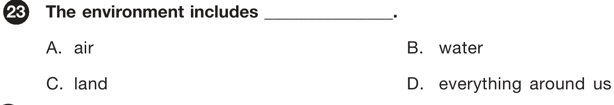
For questions 21 to 25, read the passage and answer the questions that follow.
The environment is our home, the place where we live, breathe, and grow. It includes everything around us, from the air we breathe to the water we drink to the trees, animals, and earth beneath our feet. It’s like a big, beautiful puzzle where every piece is essential for life to thrive. Imagine a world without trees, without birds chirping, or without flowers blooming. It would be a dull and lifeless place. That’s why it’s crucial to take care of our environment, just like we take care of our homes.
One of the most important things we can do to protect the environment is to reduce, reuse, and recycle. This means using less plastic, paper, and other materials that harm the environment. Instead of throwing things away, we can find creative ways to reuse them or recycle them into something new.
Another way to help the environment is by planting trees. Trees are like the lungs of the earth; they absorb carbon dioxide and release oxygen, which we need to
breathe. They also provide shade, habitat for animals, and help prevent soil erosion. We should also be mindful of how we use resources like water and electricity. Turning off the lights when we leave a room, taking shorter showers, and fixing leaky faucets can all help conserve water and energy.
It’s essential to protect the habitats of animals and plants by not littering or polluting our rivers, oceans, and forests. Every little action we take, whether it’s picking up trash or planting a sapling, can make a difference in preserving our environment for future generations.
Water is essential for life. We use it to drink, bathe, and grow food. But when we pollute our rivers, lakes, and oceans, it harms the creatures living in them and makes the water unsafe for us too. We can all do our part to protect our environment. By taking care of our environment, we are taking care of ourselves and our planet. Let’s work together to keep our home clean, green, and beautiful for many years to come.
The environment includes _______________.
air
water
land
everything around us
The most suitable option as per the given passage is ‘everything around us’.
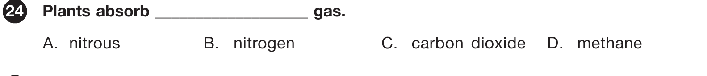
For questions 21 to 25, read the passage and answer the questions that follow.
The environment is our home, the place where we live, breathe, and grow. It includes everything around us, from the air we breathe to the water we drink to the trees, animals, and earth beneath our feet. It’s like a big, beautiful puzzle where every piece is essential for life to thrive. Imagine a world without trees, without birds chirping, or without flowers blooming. It would be a dull and lifeless place. That’s why it’s crucial to take care of our environment, just like we take care of our homes.
One of the most important things we can do to protect the environment is to reduce, reuse, and recycle. This means using less plastic, paper, and other materials that harm the environment. Instead of throwing things away, we can find creative ways to reuse them or recycle them into something new.
Another way to help the environment is by planting trees. Trees are like the lungs of the earth; they absorb carbon dioxide and release oxygen, which we need to
breathe. They also provide shade, habitat for animals, and help prevent soil erosion. We should also be mindful of how we use resources like water and electricity. Turning off the lights when we leave a room, taking shorter showers, and fixing leaky faucets can all help conserve water and energy.
It’s essential to protect the habitats of animals and plants by not littering or polluting our rivers, oceans, and forests. Every little action we take, whether it’s picking up trash or planting a sapling, can make a difference in preserving our environment for future generations.
Water is essential for life. We use it to drink, bathe, and grow food. But when we pollute our rivers, lakes, and oceans, it harms the creatures living in them and makes the water unsafe for us too. We can all do our part to protect our environment. By taking care of our environment, we are taking care of ourselves and our planet. Let’s work together to keep our home clean, green, and beautiful for many years to come.
Plants absorb ___________________ gas.
nitrous
nitrogen
carbon dioxide
methane
The most appropriate option is ‘carbon dioxide,’ as trees absorb carbon dioxide and release oxygen into the air.
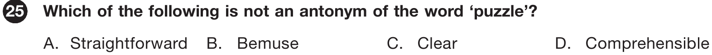
For questions 21 to 25, read the passage and answer the questions that follow.
The environment is our home, the place where we live, breathe, and grow. It includes everything around us, from the air we breathe to the water we drink to the trees, animals, and earth beneath our feet. It’s like a big, beautiful puzzle where every piece is essential for life to thrive. Imagine a world without trees, without birds chirping, or without flowers blooming. It would be a dull and lifeless place. That’s why it’s crucial to take care of our environment, just like we take care of our homes.
One of the most important things we can do to protect the environment is to reduce, reuse, and recycle. This means using less plastic, paper, and other materials that harm the environment. Instead of throwing things away, we can find creative ways to reuse them or recycle them into something new.
Another way to help the environment is by planting trees. Trees are like the lungs of the earth; they absorb carbon dioxide and release oxygen, which we need to
breathe. They also provide shade, habitat for animals, and help prevent soil erosion. We should also be mindful of how we use resources like water and electricity. Turning off the lights when we leave a room, taking shorter showers, and fixing leaky faucets can all help conserve water and energy.
It’s essential to protect the habitats of animals and plants by not littering or polluting our rivers, oceans, and forests. Every little action we take, whether it’s picking up trash or planting a sapling, can make a difference in preserving our environment for future generations.
Water is essential for life. We use it to drink, bathe, and grow food. But when we pollute our rivers, lakes, and oceans, it harms the creatures living in them and makes the water unsafe for us too. We can all do our part to protect our environment. By taking care of our environment, we are taking care of ourselves and our planet. Let’s work together to keep our home clean, green, and beautiful for many years to come.
Which of the following is not an antonym of the word ‘puzzle’?
Straightforward
Bemuse
Clear
Comprehensible
The most suitable option is ‘bemuse’ which means problematic and is not an antonym of the word ‘puzzle’.
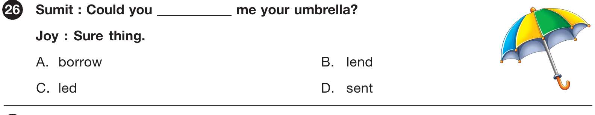
For questions 26 to 30, choose the correct option to complete each conversation.
Sumit : Could you ___________ me your umbrella?
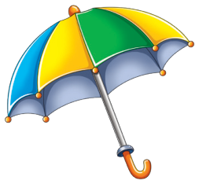
Joy : Sure thing.
borrow
lend
led
sent
The suitable verb ‘lend’ is to be used because it signifies temporary use of something.
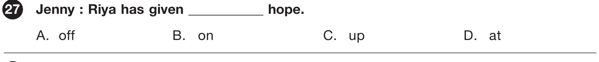
For questions 26 to 30, choose the correct option to complete each conversation.
Jenny : Riya has given ___________ hope.
off
on
up
at
The correct option is ‘up’ as the phrasal verb ‘given up’ means losing hope.
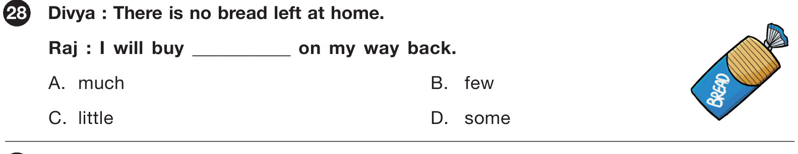
For questions 26 to 30, choose the correct option to complete each conversation.
Divya : There is no bread left at home.
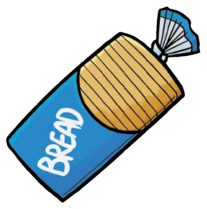
Raj : I will buy ___________ on my way back.
much
few
little
some
The appropriate quantifier ‘some’ is to be used, as it describes the unspecified unit of bread in the sentence.
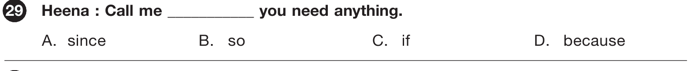
For questions 26 to 30, choose the correct option to complete each conversation.
Heena : Call me ___________ you need anything.
since
so
if
because
The suitable conjunction ‘if’ is to be used, as it expresses a condition on which something depends.
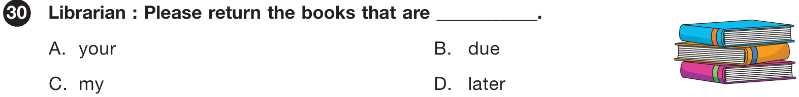
For questions 26 to 30, choose the correct option to complete each conversation.
Librarian : Please return the books that are ___________.
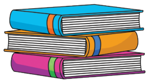
your
due
my
later
The appropriate adjective ‘due’ is to be used as it signifies the delay in return of the borrowed books in the conversation.
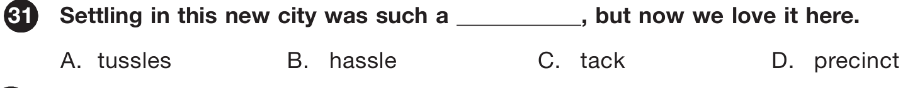
For questions 31 and 32, choose the correct option to fill in the blank.
Settling in this new city was such a ___________, but now we love it here.
tussles
hassle
tack
precinct
The appropriate noun ‘hassle’ is to be used, as it means ‘trouble and annoyance’.
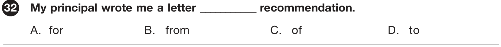
For questions 31 and 32, choose the correct option to fill in the blank.
My principal wrote me a letter ___________ recommendation.
for
from
of
to
The suitable preposition ‘of’ is to be used before the noun ‘letter of recommendation’ which means ‘a letter describing someone’s qualities and abilities’.
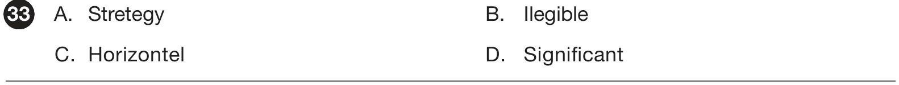
Choose the option with correct spelling.
Stretegy
Ilegible
Horizontel
Significant
The correct spelling is ‘significant’, which means ‘important’.
Choose the correct synonym of enthrall.
Upset
Droopy
Fascinate
Glum
The correct synonym of the word ‘enthrall’ is ‘fascinate,’ as they both mean ‘to hold someone’s interest or attention’.
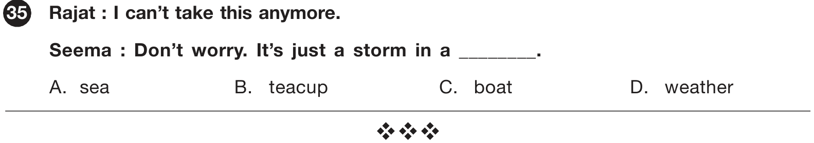
Choose the correct option to complete the conversation.
Rajat : I can’t take this anymore.
Seema : Don’t worry. It’s just a storm in a ________.
sea
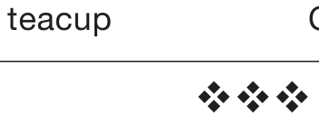
boat
weather
The appropriate option ‘teacup’ is to be used, as the idiom ‘storm in a teacup’ means ‘a lot of unnecessary anger and worry about an unimportant matter’.